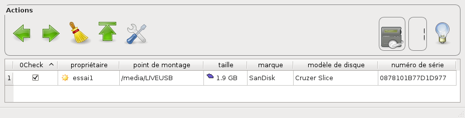

Le
but du logiciel Scolasync est de pouvoir utiliser en classe des
médias portables tels que :
des baladeurs avec un dictaphone
des tablettes tactiles
des mémoires flash USB
Les seules actions à maitriser sont liées aux icônes en haut de la fenêtre de Scolasync :
| Icône | Action |
|
Récupérer des fichiers ou des dossiers depuis les médias vers le disque dur. |
|
|
Envoyer des fichiers ou des dossiers depuis le disque dur vers des médias. |
|
|
Effacer des fichiers ou des dossiers dans les médias |
|
|
Faire la liste des médias connectés |
|
|
S'informer : accéder à l'aide, connaître les conditions légales d'utilisation, etc. |